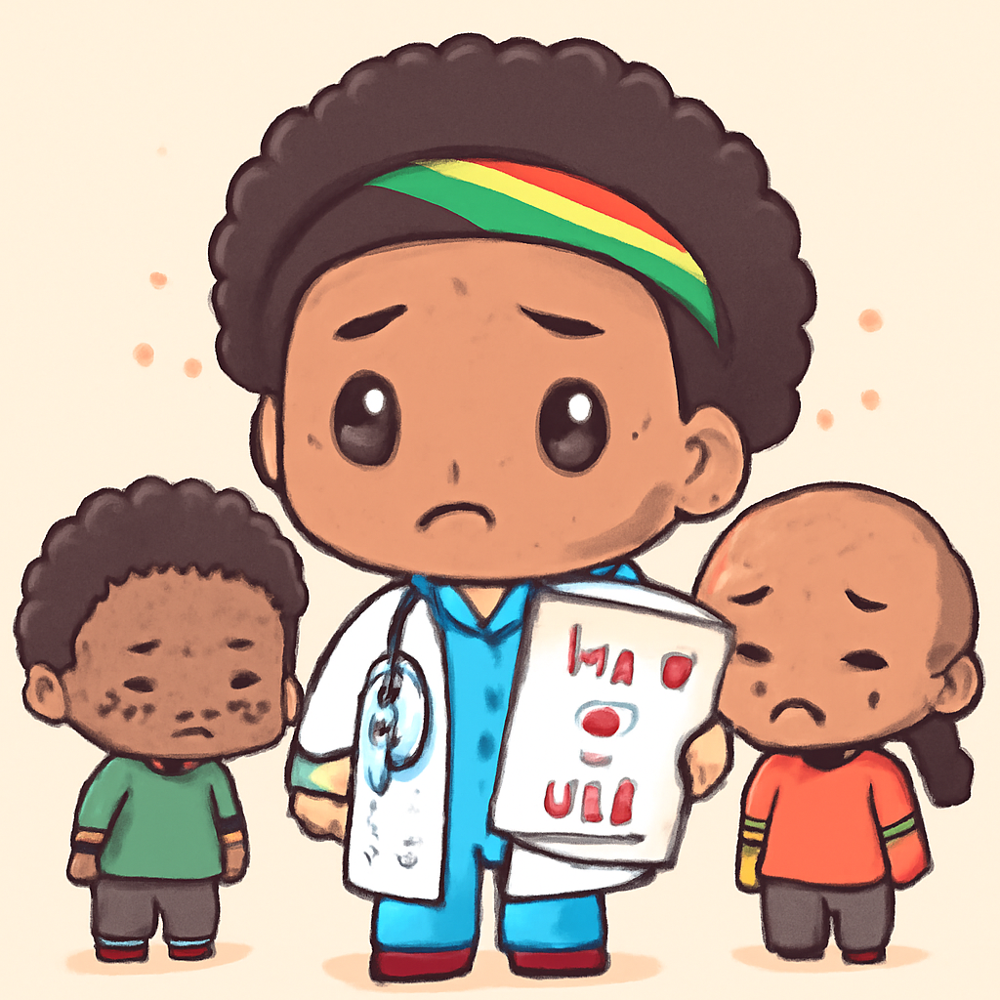
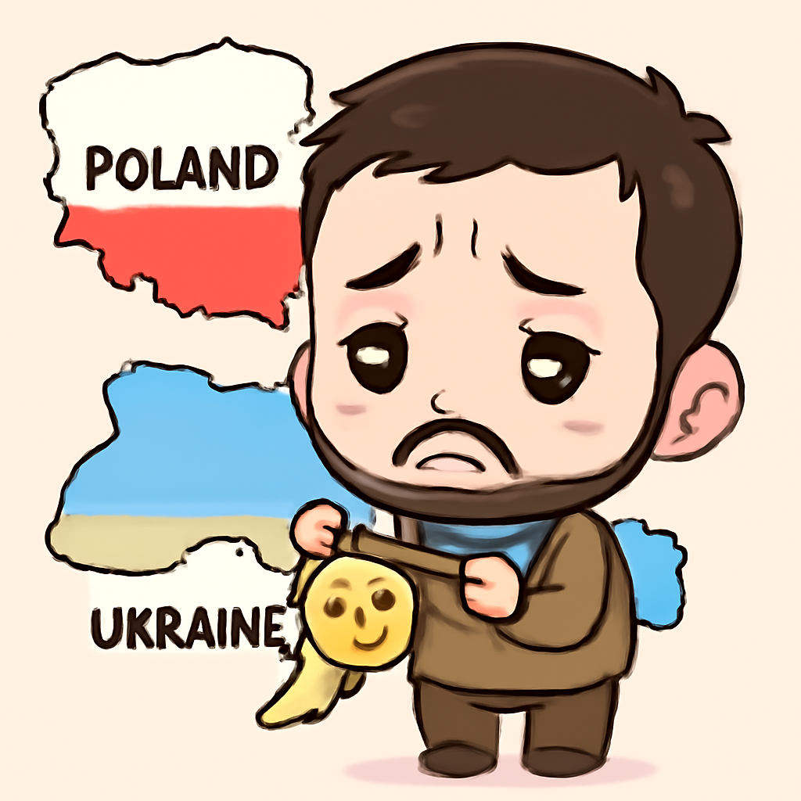
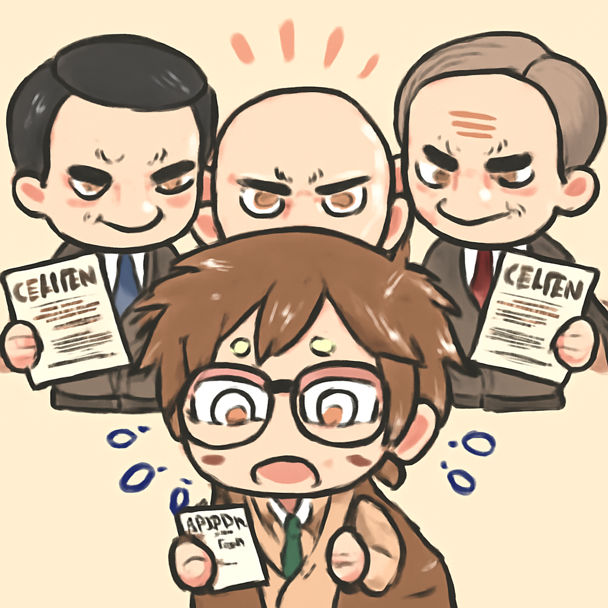

其一 · 以色列 · 與真主黨達成停火協議
以色列與真主黨達成停火，局勢緩和。
在以色列與真主黨的緊張局勢中，雙方同意停火，以避免進一步的衝突。這個決定發生在美國對伊朗的戰爭影響下，讓人希望局勢能夠穩定下來，或許是時候讓緊張的雙方好好喝杯咖啡了。
🔗 原始新聞 ↗
2026-06-20 · 以古觀今，以笑抗愁
以色列與真主黨達成停火，局勢緩和。
在以色列與真主黨的緊張局勢中，雙方同意停火，以避免進一步的衝突。這個決定發生在美國對伊朗的戰爭影響下，讓人希望局勢能夠穩定下來，或許是時候讓緊張的雙方好好喝杯咖啡了。
🔗 原始新聞 ↗
南非HIV患者數量居全球第一，資助卻要停。

美國宣布將停止對南非的HIV防治資助，這對擁有超過八百萬HIV患者的南非來說無疑是一個壞消息。這可能會導致無數人無法獲得必要的治療，真讓人不禁想問：這是要讓問題變得更嚴重嗎？
🔗 原始新聞 ↗
因二戰軍隊名稱，烏克蘭總統失去榮譽。

烏克蘭總統澤倫斯基因一個二戰軍隊名稱遭到波蘭剝奪最高榮譽，該行為引發烏克蘭的強烈譴責，稱這是"戰略錯誤"。這不僅影響了兩國關係，也讓人對歷史的詮釋有了更多的思考。
🔗 原始新聞 ↗
摩洛哥足球隊長哈基米面臨嚴重指控。
摩洛哥足球隊隊長哈基米因涉嫌強姦將接受審判，這件事的指控讓許多人感到震驚。體壇名人也不是高枕無憂，這提醒我們，名氣背後的陰影可不容小覷。
🔗 原始新聞 ↗
墨西哥政府用法律打壓記者，言論自由受威脅。

墨西哥的政客利用法律打壓新聞工作者，導致媒體自我審查，這對言論自由構成威脅。看來，即使是新聞工作者也不得不在法律的網中小心翼翼，真是讓人想起“自由”這個字的含義變得愈發模糊了。
🔗 原始新聞 ↗